같은 설명을 왜 반복하게 될까요
코덱스, 클로드 코드, 안티그래비티로 개발하다 보면 같은 말을 몇 번씩 하게 돼요. "기존 로그인은 건드리지 마", "그 방식은 아까 해 봤는데 안 됐어", "지금 만드는 건 그 기능이 아니잖아" 같은 말이요. 수정 하나 맡겼는데 AI는 프로젝트를 다시 설명받고, 이미 실패한 방법을 또 시도하고, 엉뚱하게 바꾼 코드까지 되돌려요.
이 반복에도 토큰이 계속 들어가요. API(Application Programming Interface)로 쓰면 그대로 비용이고, 구독형으로 써도 쓸데없이 사용량을 깎아 먹어요. 영상은 이 반복을 줄이는 방법 세 가지를 소개해요. 아래 슬라이드의 카드 세 장이 그 순서예요. 01 지침 파일은 새 채팅을 열어도 작업 기준을 전달하고, 02 인수인계는 긴 대화에서 필요한 것만 챙겨 이사하고, 03 기록·검색은 해결한 문제를 남겨 두고 다시 찾아 써요.
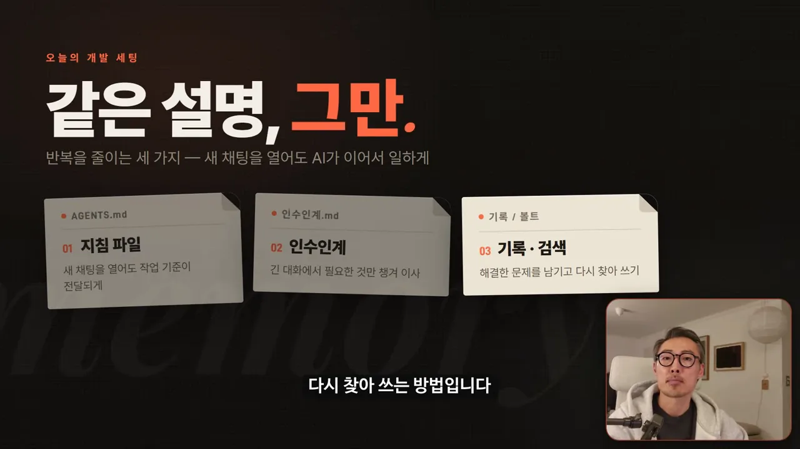
AGENTS.md, 인수인계.md, 기록/볼트)가 각 방법이 남기는 파일이에요.
영상 00:36에서 보기
예시: 중복 예약을 고치는 예약 앱
영상은 끝까지 하나의 예시로 설명해요. 예약 버튼을 두 번 누르면 같은 예약(11/05 14:00, 2명)이 두 번 저장되는 문제를 고치는 중이에요. 그런데 대화가 길어지자 AI가 '버튼에 잠금을 거는 방법은 어떨까요?'라고 다시 제안해요. 오른쪽 채팅 창 아래 빨간 글씨가 짚듯이, 그건 아까 이미 제외한 방법이에요. 새 채팅을 열면 이번엔 개발 환경부터 다시 확인하고요.
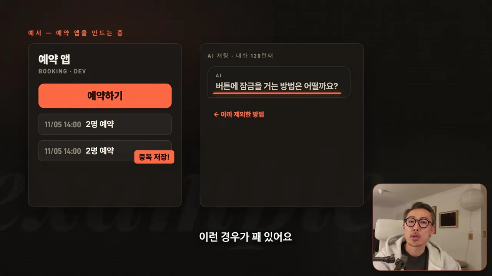
매번 하는 설명은 지침 파일로
첫 번째 방법은 매번 하는 설명을 파일에 적어 두는 거예요. 발표자는 이 파일을 마스터 프롬프트라고 불러요. 새로 합류한 개발자에게 처음 알려 주는 내용이라고 생각하면 돼요. 한 번 써 두면 그 앱을 만드는 동안 계속 기준이 돼요.
슬라이드의 AGENTS.md 카드에 적힌 네 줄이 지침에 넣을 내용이에요. 무엇을 만드는지, 어떻게 실행·테스트하는지, 조심해서 다룰 코드, 지켜야 할 디자인·스타일이에요. 오른쪽 화살표처럼 AI는 이걸 참고해서 디자인하고, 앱을 만들고, 작업을 진행해요.
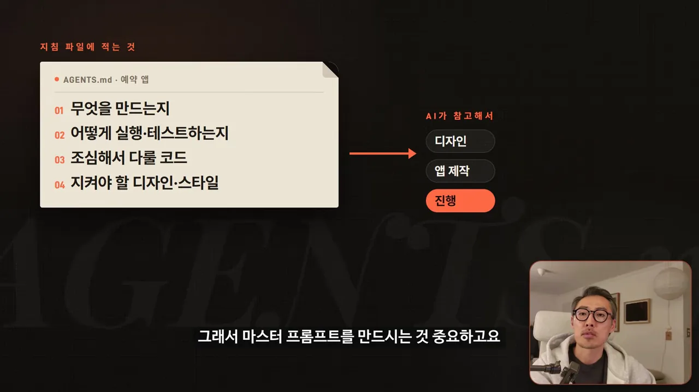
전역 지침과 프로젝트 지침
지침은 두 곳으로 나눠요. 왼쪽 카드가 모든 프로젝트에 공통인 전역 지침, 오른쪽 카드가 이 앱에만 해당하는 프로젝트 지침이에요.
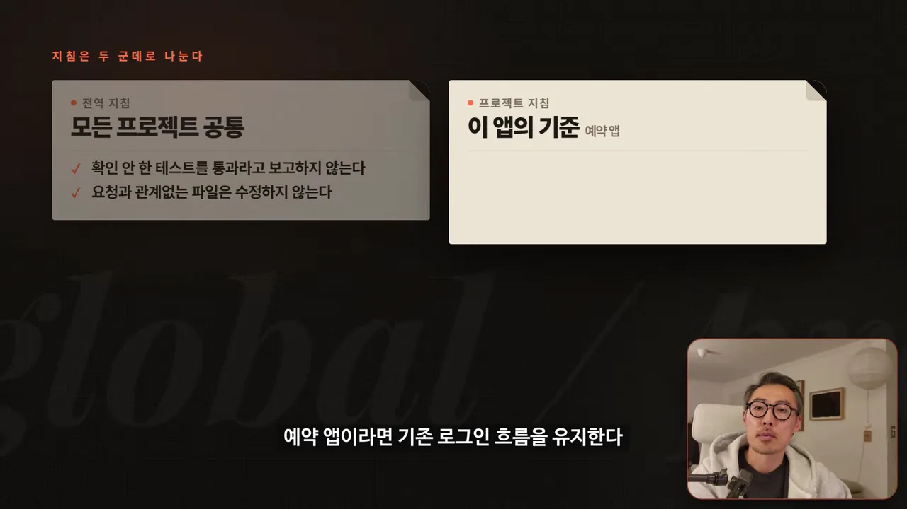
영상이 든 예시를 나란히 놓으면 이래요.
| 구분 | 무엇을 적나요 | 영상의 예시 |
|---|---|---|
| 전역 지침 | 여러 프로젝트에 공통인 기준 | 확인하지 않은 테스트를 통과했다고 보고하지 않는다 요청과 관계없는 파일을 수정하지 않는다 |
| 프로젝트 지침 | 그 앱의 작업 기준 | 기존 로그인 흐름을 유지한다 예약 저장 코드는 이 위치에 있다 수정 후에는 이 명령으로 테스트한다 |
발표자는 전역 지침의 첫 줄을 특히 강조해요. AI에게 거짓말하지 말라는 뜻이에요. 그리고 도구마다 지침 파일을 두는 위치와 읽는 방식이 달라요. 코덱스, 클로드 코드, 안티그래비티 문서에서 내 도구가 실제로 읽는 파일을 확인해야 해요.
지침 파일도 토큰을 먹어요
여기서 주의할 점이 하나 있어요. 지침 파일도 AI가 읽는 내용이라 토큰을 차지해요. 슬라이드의 '39 tok, 채팅마다 AI가 다시 읽는 양'이 그 뜻이에요. 개발 기록까지 전부 넣으면 필요 없는 내용이 매번 따라붙어요.
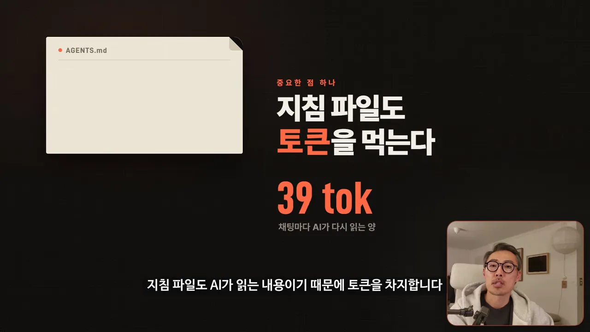
채팅 창도 같은 원리예요. 한 창에서 대화가 쌓이면 "안녕" 한마디에도 AI는 그 전의 컨텍스트를 전부 읽고 답해요. 그래서 왼쪽처럼 수다 떨듯 하나씩 던지면 컨텍스트가 낭비돼요. 오른쪽처럼 목표, 지켜야 할 것, 순서대로 할 일을 한 번에 정리해서 넘기는 게 더 깔끔하고 빠르고 토큰도 아껴요.
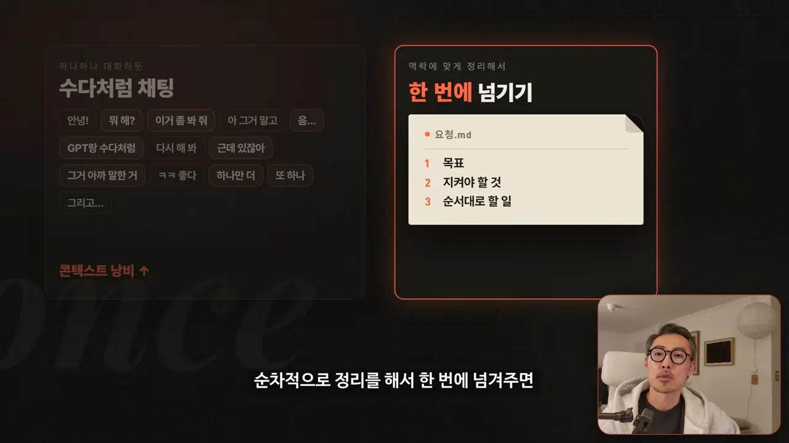
결론은 지침에는 자주 필요한 기준만 짧게 남기고, 자세한 기록은 따로 보관하라는 거예요.
맥락이 바뀌면 새 창, 옮길 땐 인수인계
두 번째 방법은 작업의 목적이 바뀌면 새 채팅 창으로 나누는 거예요. 예약 오류를 고치던 채팅에서 갑자기 관리자 화면 디자인까지 시작하면, 서로 다른 일이 한 대화에 섞여요. 슬라이드의 말풍선이 그 모습이에요. '예약 버튼 중복 저장 고쳐 줘' 사이에 '관리자 화면 디자인도 바꾸자', '색은 어때?', '표 레이아웃은?'이 끼어들어 오른쪽처럼 맥락이 섞여요.
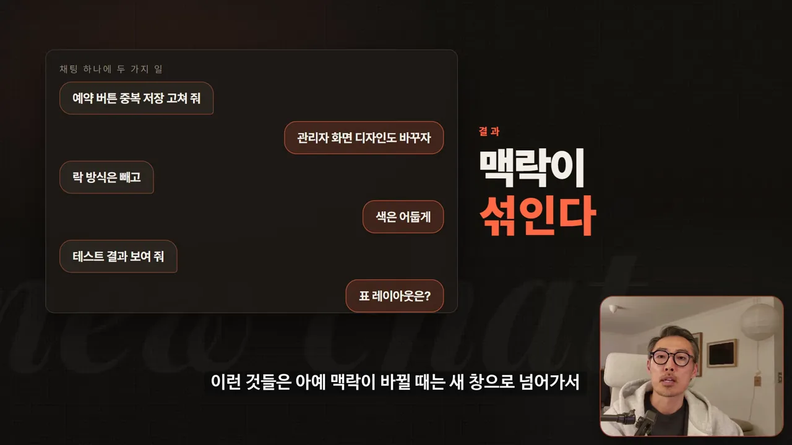
컨텍스트는 매번 통째로 다시 읽혀요
AI가 참고하는 대화, 코드, 실행 결과, 오류 로그를 통틀어 컨텍스트라고 해요. 내가 쓴 질문만이 아니라 AI가 읽은 파일과 잡아 둔 에러 로그도 전부 들어가요. AI는 답할 때마다 이걸 처음부터 다시 읽어요. 발표자는 이걸 책 한 권을 통째로 다시 읽고 대답하는 일에 비유해요.
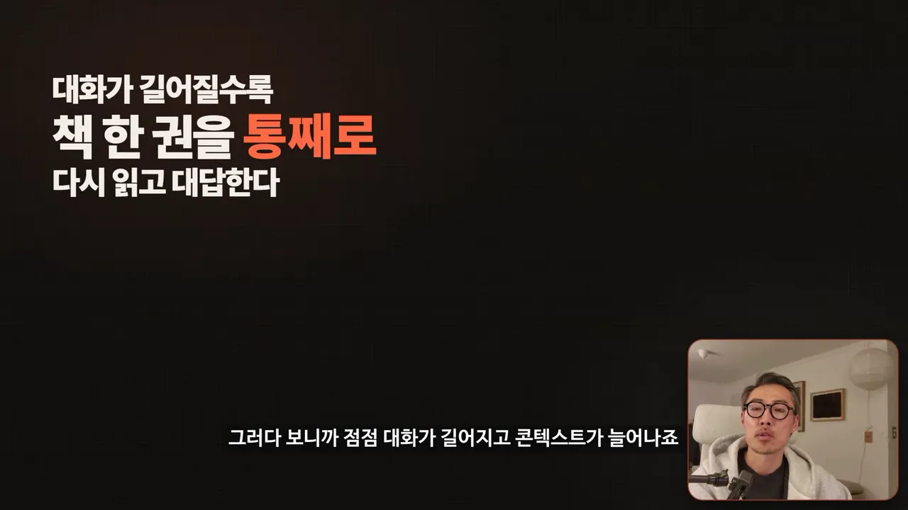
대화가 길어져 실패한 시도와 낡은 조건까지 섞이면, 지금 무엇이 확정된 내용인지도 헷갈려요. 에러를 잡다가 AI가 도저히 말을 못 알아듣는다 싶으면 바로 새 창으로 가는 게 훨씬 빨라요. 그래서 그때를 대비해 마스터 지침과 기획서(초기 기획서, 중간 정리)를 미리 정리해 둬야 해요.
한 폴더에서 새 창으로 가지를 쳐요
발표자가 권하는 구조는 이래요. 하나의 작업은 하나의 프로젝트 폴더에서 시작해요. 슬라이드의 '예약 앱' 폴더 아래 작은 글씨처럼 그 폴더에 AGENTS.md와 기획서를 두고, 거기서 새 창을 열어 '예약 오류', '관리자 화면', '결제 연결'처럼 맥락이 다른 일을 가지 치듯 나눠요. 게임처럼 복잡한 개발도 이렇게 나누면 훨씬 효율적이라고 해요.
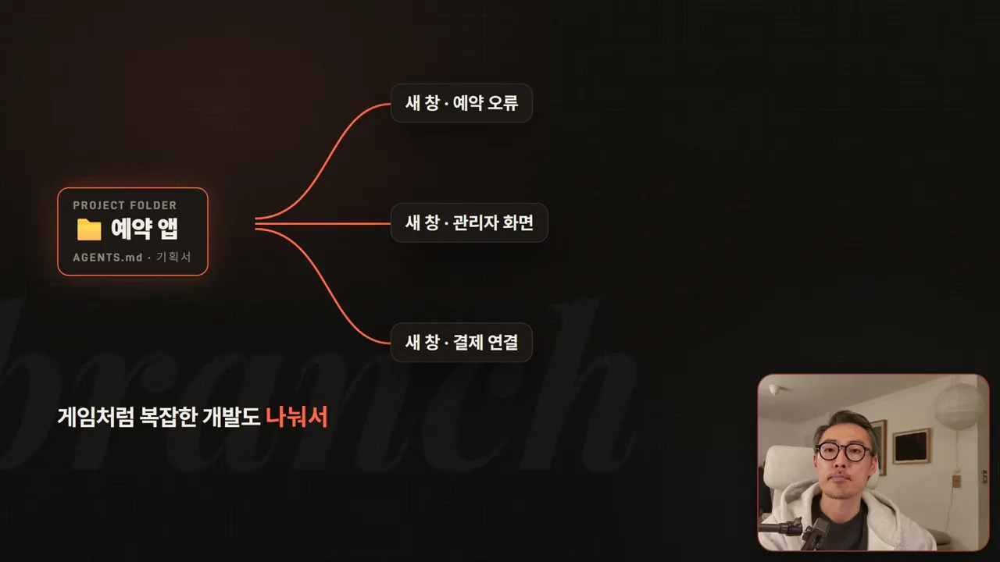
다만 새 창을 자주 여는 것 자체가 목적은 아니에요. 같은 문제를 잘 풀고 있다면 그대로 이어 가는 게 나아요. 영상이 말한 기준을 한 장으로 모으면 이래요.
flowchart LR
A["지금 하려는 일"] --> B{"같은 문제를 잘 푸는 중?"}
B -- "예" --> C["그대로 이어 가기"]
B -- "아니요" --> D{"이전 맥락이 필요?"}
D -- "예" --> E["인수인계서 쓰고 새 창으로 이사"]
D -- "아니요, 다른 파트" --> F["같은 폴더에서 새 창"]
이어 가려면 인수인계서를 써요
하던 일을 새 창에서 이어 가려면 사람끼리 하듯 인수인계를 하면 돼요. 휴가를 가거나 새로 온 사람에게 일을 넘길 때처럼요. 한 창에서 오래 일하다 보면 컨텍스트가 너무 쌓여 AI가 벅차 보이는 때가 와요. 영상 슬라이드는 이 상태를 'A 창 · 오래 일한 채팅, 너무 벅차요, 94%'로 그려요.
그때 아래 요청문을 그대로 보내면 AI가 알아서 인수인계서를 정리해 줘요. 슬라이드의 주황 테두리 안이 복사해서 쓸 요청문이고, 아래 인수인계서.md 카드가 돌아오는 결과의 세 덩어리예요.
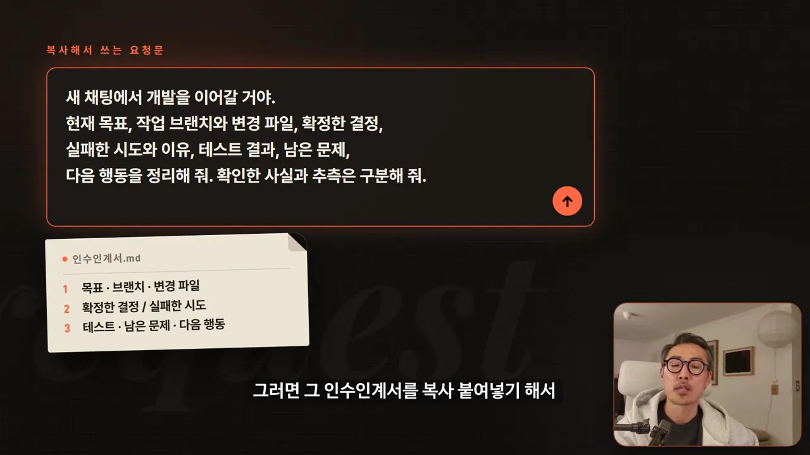
슬라이드의 요청문을 옮기면 이래요.
새 채팅에서 개발을 이어갈 거야.
현재 목표, 작업 브랜치와 변경 파일, 확정한 결정,
실패한 시도와 이유, 테스트 결과, 남은 문제,
다음 행동을 정리해 줘. 확인한 사실과 추측은 구분해 줘.작업 브랜치와 변경 파일까지 적어 두면 새 창의 AI가 어디서부터 이어 갈지 바로 알아요. AI가 써 준 인수인계서를 복사해서 새 창에 붙여 넣으면 이사가 끝나요.
실제로 인수인계를 해 보면
시연에 앞서 발표자는 예약 앱이라면 인수인계서가 어떤 모양인지부터 보여 줘요. 카드에 여섯 줄이 있어요. 오른쪽 아래 빨간 도장 '2026-11-05 작성, 작성한 시점의 기록'도 눈여겨볼 곳이에요. 인수인계서는 쓴 시점의 상태라서, 그 상태에서 다시 이어 갈 수 있게 정리하는 거예요.
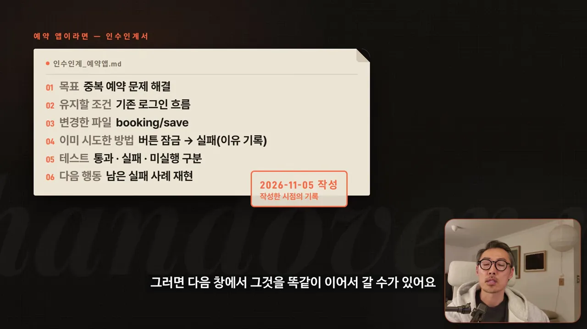
실제 코덱스 창에서 이사하기
실제 시연은 발표자가 오래 써서 컨텍스트가 많이 쌓인 '솔로몬' 시스템 개발 채팅이에요. "새로운 창에서 작업을 이어갈 거야, 인수인계서를 작성해 줘"라고 보내자, 코덱스가 인수인계 문서를 써서 세컨드 브레인에 저장했다고 답해요. 화면 왼쪽 위 '01 인수인계서 작성 완료' 표시가 그 순간이에요. 세컨드 브레인은 뒤에서 다룰 옵시디언이고, 발표자는 인수인계서가 그쪽에 자동 저장되게 해 뒀어요. AI는 새 창에 붙여 넣을 문장까지 정리해 줘요.
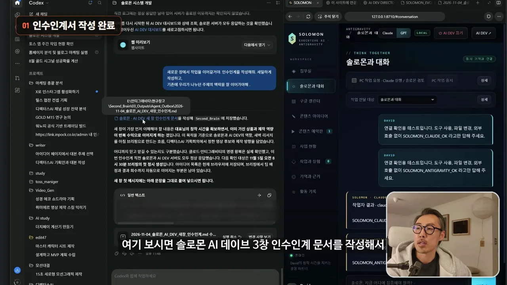
이사는 네 단계예요. 화면 위쪽에 '01 복사, 02 같은 폴더 선택, 03 새 채팅, 04 붙여넣기' 라벨이 차례로 떠요.
flowchart LR A["01 복사
AI가 정리한 인수인계 문장"] --> B["02 같은 폴더 선택
시연: 마케팅 총괄 분석"] --> C["03 새 채팅"] --> D["04 붙여넣기"] --> E["새 창이 인수인계서를
먼저 읽고 이어 감"]
붙여 넣으면 새 창은 인수인계 문서를 먼저 읽고 "이 내용을 기준으로 이전 맥락을 이어가겠습니다"라고 답해요. 화면 왼쪽 위 라벨이 그 답의 짜임을 짚어요. 01 새 창이 인수인계서를 먼저 읽고, 02 이전 맥락을 이어 가겠다고 하고, 03 과거 검증·현재 상태·미검증 항목을 나눠요. 시연에선 11월 5일 오전 8시 반 브리핑이 아직 검증하지 않은 항목으로 따로 적혔어요.
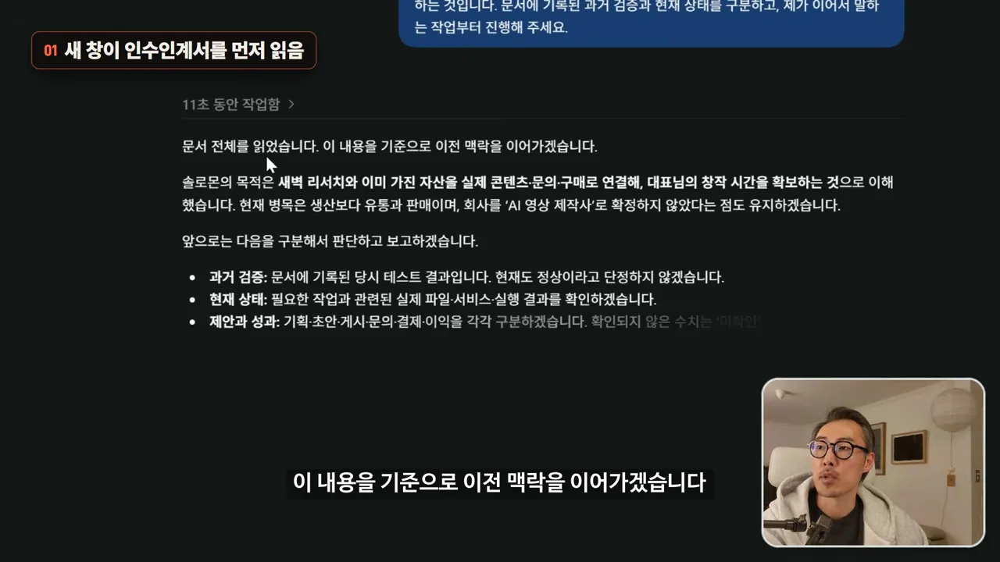
언제 이사하고, 언제 새 창만 여나요
발표자는 시연을 이렇게 정리해요. 맥락을 이어 갈 때는 인수인계서를 쓰고 이사해요. 같은 일 안에서도 파트나 내용이 달라지면 같은 폴더에서 새 창을 열어 새로 시작해요. 폴더에는 에이전트 지침을 따로 둘 수 있어서, 큰 맥락은 폴더 안에서 이어지고 세부 맥락만 창별로 나뉘어요.
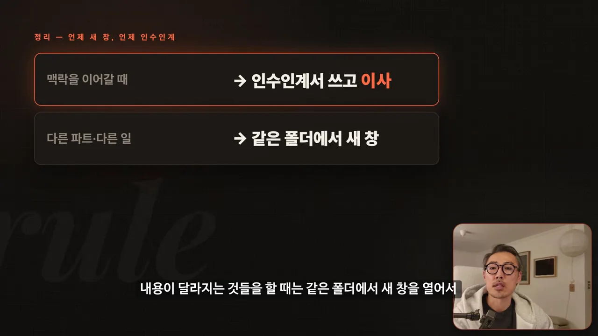
한 번 푼 문제는 기록해 두고 찾아 쓰기
세 번째 방법은 한 번 해결한 문제를 다음에도 쓸 수 있게 남기는 거예요. 오류가 왜 났는지, 어떤 방법이 실패했는지, 최종적으로 무엇을 바꿨는지가 채팅 속에만 있으면 다음 개발 때 다시 찾아서 또 설명해야 해요. 채팅이 묻히면 아예 잃어버리기도 하고요.
기록은 옵시디언 볼트에 모아요
발표자는 이 기록을 옵시디언에 모아요. 옵시디언은 메모를 내 컴퓨터 폴더에 텍스트 파일로 저장하는 앱이에요. 슬라이드의 빨간 꼬리표처럼 그 보관함을 볼트라고 부르는데, 그냥 흔한 폴더예요. 오른쪽 카드의 '볼트 / 개발 기록' 폴더 안에 '프로젝트 구조.md', '로그인 구현 설정', '중복 예약 오류 해결', '배포 시 확인 사항' 같은 파일을 두고, 개발 에이전트가 검색해서 읽을 수 있게 연결해요.
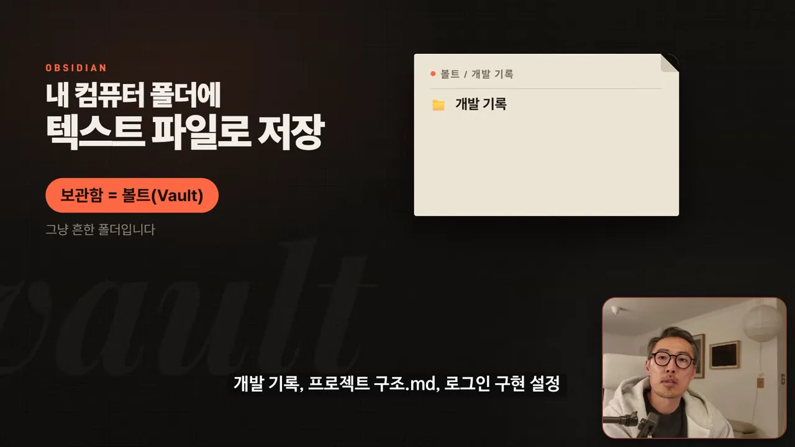
RAG: 찾아서 읽고 작업에 보태요
여기서 나오는 개념이 RAG(Retrieval-Augmented Generation), 한국어로 검색 증강 생성이에요. 기록한 것을 검색하고, 필요한 내용을 다시 읽어서 작업에 쓰는 방식이에요. 개발 상황으로 풀면 '예전에 비슷한 문제를 어떻게 풀었는지'를 AI가 직접 찾아보게 하는 거예요.
슬라이드의 메모 네 장이 그런 기록의 예예요. 결제 문제.md(그때 어떻게 고쳤나), 서버 연결.md(안 됐던 이유), 텔레그램 연결.md(설정 순서), 인스타그램 자동화.md(다시 쓸 방법)이에요. 한 번 연결해 본 자동화를 다른 곳에서 다시 하려면 맥락을 잃기 쉬운데, 이렇게 남겨 두면 바로 찾을 수 있어요.
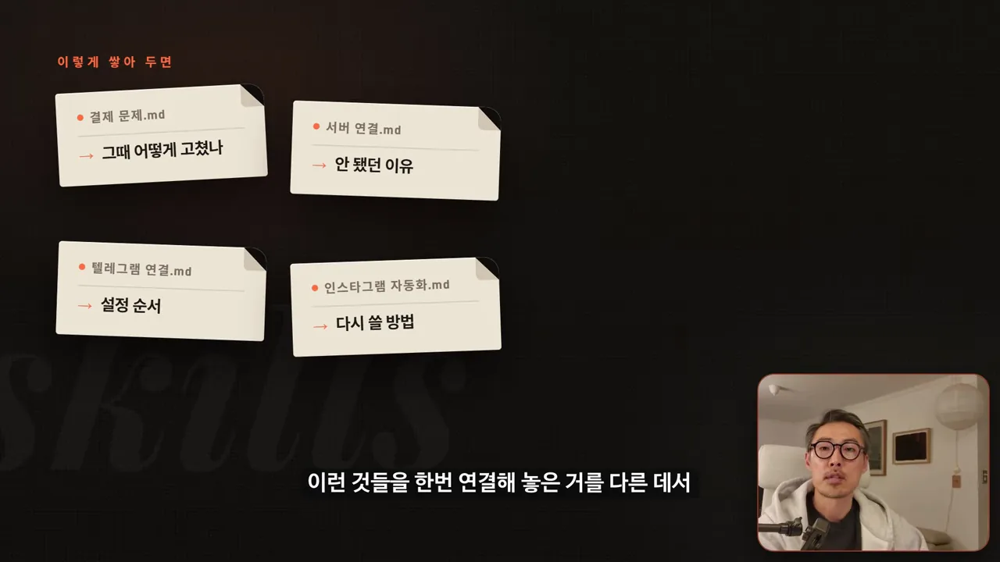
발표자는 이런 해결법을 스킬로 만들어 한 폴더에 모으고 옵시디언으로 정리해 둬요. 그러면 코덱스든 안티그래비티든 클로드든, 어느 AI가 와도 똑같이 할 수 있어요.
핵심은 기록이 100개 있다고 매번 100개를 다 읽히는 게 아니라는 점이에요. 아래 슬라이드의 격자가 기록 100개이고, 그중 주황으로 켜진 칸만 읽어요. 예약 오류를 고친다면 #예약 태그가 붙은 기록부터 찾아요. 사람이 읽는 문서와 달리 구조화하고 태그를 붙여 저장하면, AI는 관련된 것만 쏙쏙 뽑아 빠르게 읽어요.
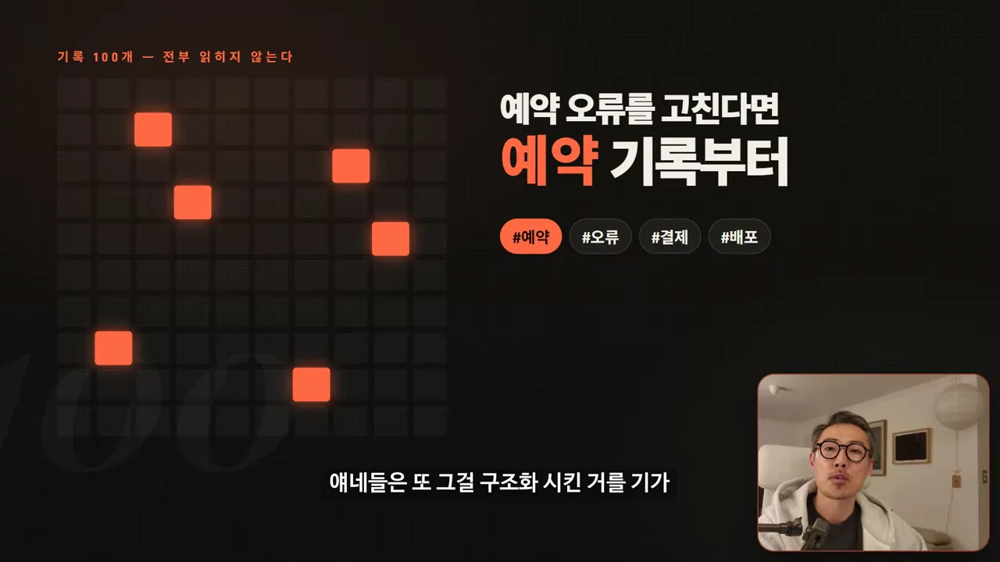
설치만으로는 못 읽어요
옵시디언을 설치한다고 개발 에이전트가 기록을 읽는 건 아니에요. 슬라이드의 빨간 버튼 두 개가 해 줘야 할 일이에요. 보관함 위치를 알려 주고, 그 폴더를 검색하고 읽을 수 있게 연결해요.
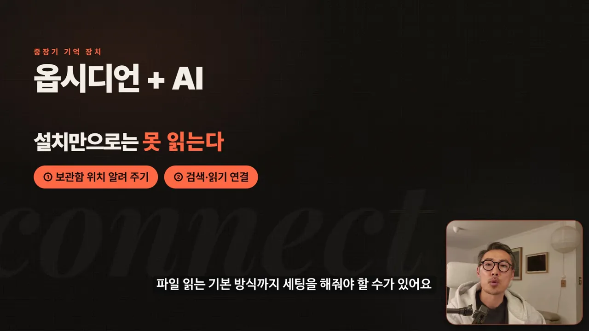
코덱스라면 설정의 '일반' 화면에서 기본 권한을 봐요. 워크스페이스의 파일을 읽고 편집하게 두거나, 발표자처럼 전체 액세스를 켜 두면 에이전트가 파일과 폴더를 직접 찾아 읽어요. 화면 왼쪽 위 라벨이 '01 Codex 설정 → 기본 권한, 02 전체 액세스 = 파일·폴더를 직접 읽음'이에요.
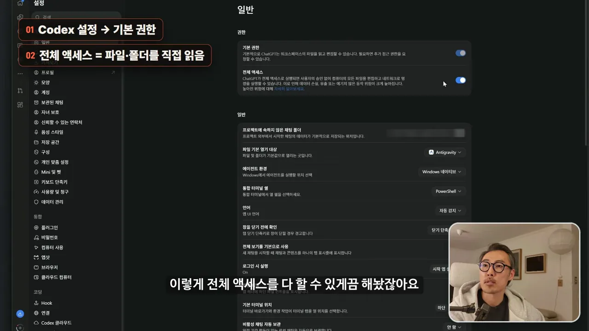
그다음 지침에 볼트 위치를 적어 두면, 그 뒤로는 항상 거기에 저장해요. 화면 오른쪽 위 'AGENTS.md에 한 줄' 카드가 넣을 내용이에요. 기록은 옵시디언 볼트(위치)에 저장하고, 작업 전 관련 문서를 검색해 필요한 부분만 읽고, 옛 기록과 지금 코드가 다르면 차이를 확인해요. 뒤의 파란 말풍선은 앞서 새 창에 붙여 넣은 인수인계 문장이에요.
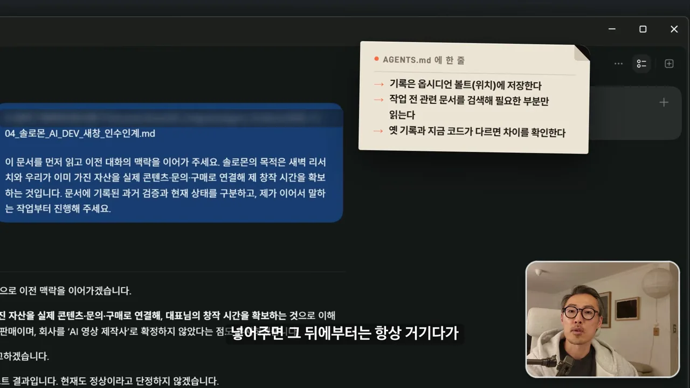
기록이 쌓이면 회사 자료가 돼요
발표자의 실제 옵시디언 그래프는 처음엔 파일이 몇 개 없다가, 연결하고 구조화해 저장할수록 노드가 늘어나요. 타임랩스 중 오른쪽 위 숫자가 250개에서 1,480개로 커져요. 아래 화면은 제미나이 대화를 날짜별로 정리한 노트들이에요. 날짜 노드들이 가운데 주제 노드로 모이는 게 보여요. 비슷한 내용끼리 AI가 알아서 이어 붙였다고 해요.
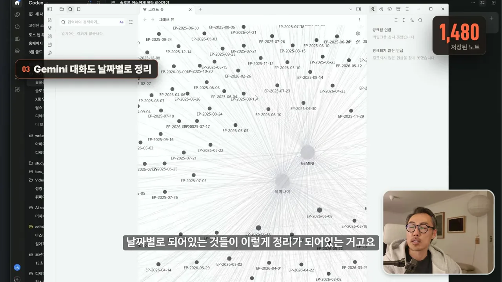
이 정리는 발표자가 손으로 하지 않아요. 매일 밤 작업이 끝날 무렵, 그날 개발한 것, 실수한 것, 새로 찾은 정보를 자동으로 맥락에 맞게 정리해 저장하게 해 뒀어요. 화면 왼쪽 위 '매일 밤 자동 · 그날 일을 정리해 저장' 카드의 세 태그가 그 세 가지예요.
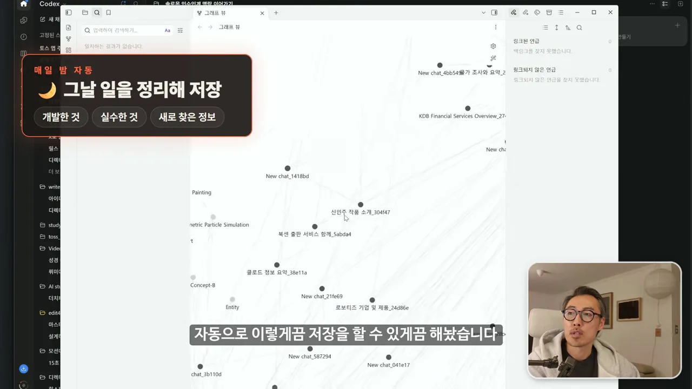
이렇게 쌓인 정리는 회사의 중요한 자료가 돼요. 발표자는 옵시디언 기록에 추가 조사를 더해 회사 홈페이지 블로그 '인사이트' 글을 쓰고, 이번 강의 자료로도 써요. 화면 라벨 '01 홈페이지·블로그 인사이트, 02 옵시디언 기록 + 추가 리서치 → 글'이 그 흐름이에요.
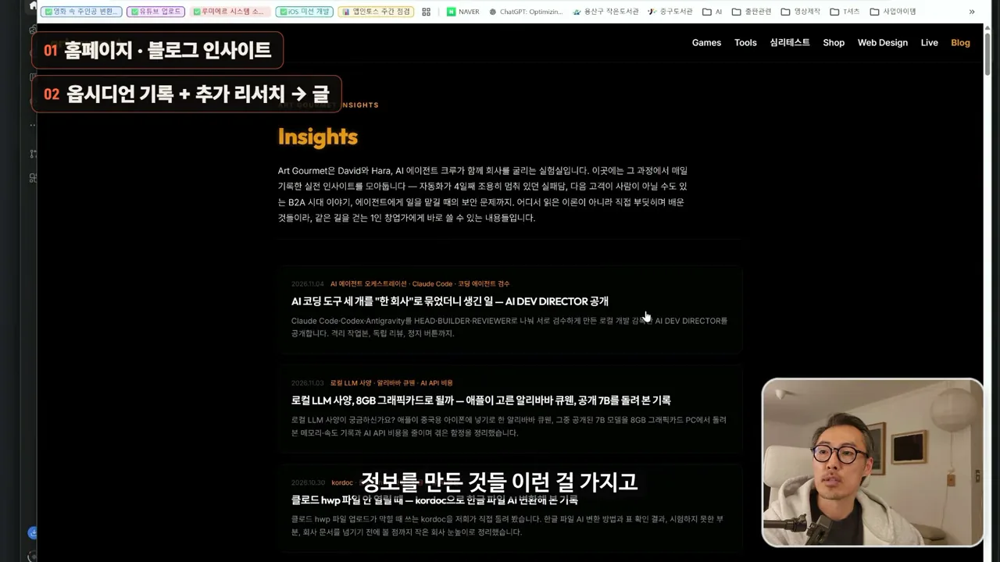
발표자는 결국 AI가 기억을 얼마나 잘 쓰느냐가 중요하다고 말해요. 사람도 기억이 그 사람의 본질일 수 있듯이요. 옵시디언 그래프가 뉴런처럼 연결되며 커질수록 찾고 검색할 거리도 늘어나요. 옵시디언 자체는 나중에 따로 자세히 다루겠다고 해요.
오늘 가져갈 세 가지
마지막 슬라이드는 세 가지를 체크 표시로 정리해요. 반복하는 기준은 지침 파일에, 작업이 바뀌면 새 채팅·이어 갈 땐 인수인계, 해결 과정은 기록하고 검색해서 다시 쓰기예요. 아래 회색 글씨처럼 반복에 쓰던 시간과 토큰을 다음 기능에 쓰자는 거예요.
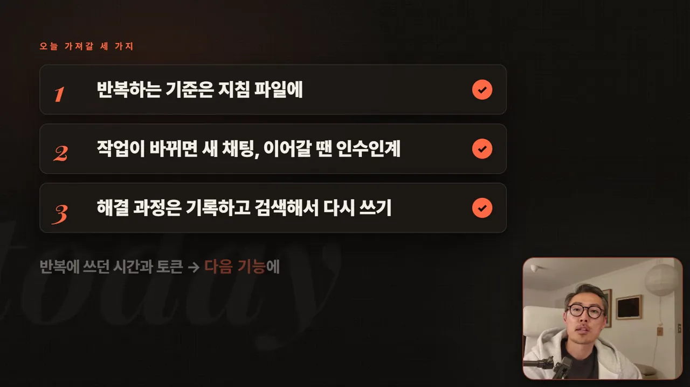